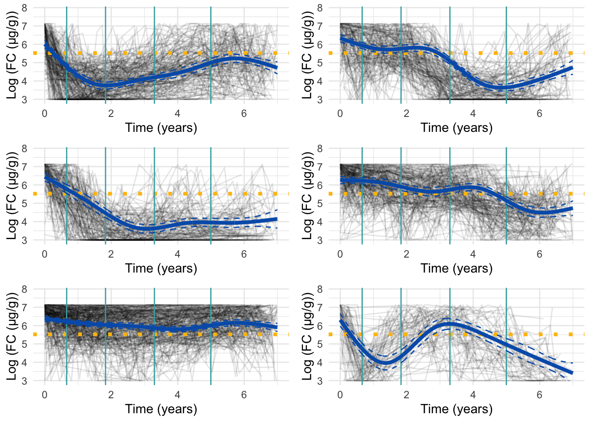

set.seed(123)if(file.exists("/.dockerenv")){# Check if running in Docker# Assume igmm/cvallejo-predicct/libdr/ is passed to the data volumeprefix<-"data/"}else{# Assume running outside of a Docker container and the IGC(/IGMM) datastore is# mounted at /Volumesprefix<-"/Volumes/igmm/cvallejo-predicct/libdr/"}###########################-- Packages --###########################library(tidyverse)# Support package (source found in libdr/)library(libdr)## Modelling ##library(lcmm)library(kml)# K-means## Presentation ##library(patchwork)library(ggdist)library(ggalluvial)library(pander)library(qqplotr)###########################-- Data read --###########################dict<-readRDS(paste0(prefix, "processed/dict.RDS"))fcal<-readRDS(paste0(prefix, "processed/fcal.RDS"))
This page describes how the latent class mixed models (LCMMs) were fitted to faecal calprotectin (FC). A separate page is dedicated to C-reactive protein.
In order to not present subject-level data, subjects within each cluster have been collated into groups of six.
Model specification
LCMMs are an extension of linear mixed effects models with an added cluster-specific fixed effect component. We use LCMMs with a natural cubic spline formulation for the fixed effects component. Random effects are specified as intercepts and the multinomial logistic regression model which assigns cluster membership uses IBD type (CD, UC, or IBDU) as a covariate.
For full formal definitions of the models and statistics we have used in the work, please refer to the supplementary material for our paper.
Model statistics
Model loading
Fitting the LCMMs discussed in this report takes multiple days in some cases and uses 25 CPU cores per model. We have fitted these models using Eddie, the University of Edinburgh’s high performance computing solution. The code in the dropdown box below was used to fit the models.
## Modelling ##library(lcmm)library(splines)fcal<-readRDS("fcal.RDS")fcal$calpro_result<-log(fcal$calpro_result)if(!dir.exists("cache"))dir.create("cache")if(!file.exists("m1.RDS")){m1<-hlme(fixed =calpro_result~ns(calpro_time, df =4, Boundary.knots =c(0, 7)), random =~1, subject ="ids", data =fcal, verbose =TRUE, var.time ="calpro_time", maxiter =8000)if(m1$conv!=1)stop("LME did not converge \n")saveRDS(m1, "m1.RDS")message("Finished fitting m1")}
## Modelling ##library(lcmm)library(splines)args<-commandArgs(trailingOnly =TRUE)fcal<-readRDS("fcal.RDS")fcal$calpro_result<-log(fcal$calpro_result)if(!dir.exists("cache"))dir.create("cache")rep<-50# set the maximum number of iterationsmaxiter<-10if(file.exists("m1.RDS")){m1<-readRDS("m1.RDS")ng<-as.numeric(args[1])# create a clustercl<-parallel::makeForkCluster(parallel::detectCores())# export the number of groups to the clusterparallel::clusterExport(cl, "ng")# run gridsearchhlme.fit<-gridsearch( rep =rep, maxiter =maxiter, minit =m1, cl =cl,hlme(calpro_result~ns(calpro_time, df =4, Boundary.knots =c(0, 7)), mixture =~ns(calpro_time, df =4, Boundary.knots =c(0, 7)), random =~1, subject ="ids", classmb =~1+diagnosis, ng =ng, data =fcal, maxiter =24000, verbose =TRUE, partialH =FALSE))# stop the clusterparallel::stopCluster(cl)if(hlme.fit$conv==1){message("Convergence achieved for ", ng, " subgroups ✅ \n")}else{stop("Convergence NOT achieved for ", ng, " subgroups ⚠️ \n")}saveRDS(hlme.fit, paste0("cache/fcal-", ng, ".RDS"))}else{stop("m1 not found!")}
As recommended by Proust-Lima, Philipps, and Liquet (2017), a linear mixed effects model is first fitted to generate initial starting values, (the “Initial LME” tab). A grid search approach is then used to converge the LCMMs towards a global maximum for each assumed number of clusters based on maximum likelihood (the “LCMM” tab).
After the above code is run, the resultant models are saved in cvallejo-predicct/libdr/cache/ for use in this report.
When an LCMM is fitted, the assumed number of clusters (or “classes”) must be specified a priori. Here we consider 4-8 clusters as 4 clusters were already found in our previous work (Constantine-Cooke et al. 2023), and we expect to find at least as many clusters given our inclusion criteria is more relaxed.
A posteriori model statistics and visual investigations must be used to decide upon the optimum number of classes.
Fixed effects specified via Natural Cubic Splines
Code
# set the number of groupsG.fcal<-numeric()models.fcal<-list()G.cands<-seq(2, 11)for(G.candinG.cands){file.name<-paste0(prefix, "/cache/fcal/ncs/fcal-", G.cand, ".RDS")if(file.exists(file.name)){G.fcal<-c(G.fcal, G.cand)models.fcal[[G.cand]]<-readRDS(file.name)}}rm(G.cand)
We firstly consider specifying fixed effects using NCS which have a few notable advantages (Elhakeem et al. 2022):
Less parameters need to be estimated than either a GRBF function regression model or a polynomial regression model with the same flexibility. This reduces the time complexity when fitting the model and in the future may also make extensions more practically feasible.
NCS enforce linearity between t_0 and the first knot and between the last knot and t_\text{max} which ensures the model does not behave erratically in these sometimes problematic areas.
NCS are not highly sensitive to a continuous parameter and instead requires only K, the number of knots to be tuned. NCS are typically robust to where the knots themselves are placed.
Knot choice
To determine the most appropriate number of knots for the natural cubic splines, we considered two, three, and four knots. We only use six-cluster models for this analysis as this reasonably captures heterogeneity without being too expensive computationally.
Our previous work used three knots across a five-year period. As we are now modelling across a seven-year period, we may need to increase the number of knots to four to ensure the model remains flexible. We also considered two knots] in case a more smoooth model is required.
We place the knots at their default location which is at quantiles. We note that the number of knots is reported by Harrell (2015) to be much more important than knot location.
Figure 1: Cluster profiles for the six-cluster model assuming one knot. The vertical teal lines indicate knot location. Mean cluster profiles are denoted by the red curves
Two knots
From Figure 2, we can see specifying only two knots results in very smooth curves for the mean trajectory of each cluster. However, this model appears to be too smooth which results in a relatively poor fit.
Figure 2: Cluster profiles for the six-cluster model assuming two knots. The vertical teal lines indicate knot location. Mean cluster profiles are denoted by the red curves
Three knots
Three knots appears to be the most appropriate specification (Figure 3). Whilst there is perhaps some evidence of overfitting, this appears to be minimal.
Figure 3: Cluster profiles for the six-cluster model assuming three knots. The vertical teal lines indicate knot location. Mean cluster profiles are denoted by the red curves
Four knots
Four knots appears to be too many. Figure 4 presents a minor improvement to model fit over the three knot specification, and there are signs of overfitting which is likely driven by the small distances between knots.
Warning: Removed 24 rows containing missing values or values outside the scale range
(`geom_line()`).

Figure 4: Cluster profiles for the six-cluster model assuming four knots. The vertical teal lines indicate knot location. Mean cluster profiles are denoted by the red curves
Model statistics
AIC and BIC both suggest a four-knot specification to be optimal (Table 1). However, visual inspection of the mean cluster trajectories (see above) suggests the four-knot approach results in overfitting, especially around knot locations. This will also become more of an issue as the number of clusters increase and additional sparsity is exhibited for some clusters.
As such, we have elected to use natural cubic splines with three knots placed at quantiles.
Table 1: Model statistics for differing numbers of knots for natural cubic splines
Knots
Maxmum log likelihood
AIC
BIC
One knot
-16448.75
32967.49
33140.50
Two knots
-16230.02
32542.04
32744.71
Three knots
-16141.82
32377.63
32609.96
Four knots
-16125.38
32356.75
32618.74
Number of clusters
After determining the most appriopate number of knots, we must now decide upon the most appropiate number of clusters.
From the alluvial plot comparing FC models (Figure 5), we can see newly formed clusters are quite robust- remaining consistent as the number of clusters increases. However, new clusters are formed from multiple clusters which implies these clusters do not have a high degree of separation from one another. From this figure, six clusters appear to be a reasonable choice.
Code
alluvial.df<-matrix(nrow =0, ncol =3)colnames(alluvial.df)<-c("ids", "class", "G")for(GinG.fcal){alluvial.df<-rbind(alluvial.df, cbind(models.fcal[[G]]$pprob[, 1:2], G =G))}alluvial.df<-as.data.frame(alluvial.df)alluvial.df$ids<-as.character(alluvial.df$ids)alluvial.df$class<-as.factor(alluvial.df$class)# eliminate label switchingalluvial.df[alluvial.df[, "G"]==3, "class"]<-plyr::mapvalues(alluvial.df[alluvial.df[, "G"]==3, "class"], from =c(seq(1, 3)), to =c(3, 1, 2))alluvial.df[alluvial.df[, "G"]==4, "class"]<-plyr::mapvalues(alluvial.df[alluvial.df[, "G"]==4, "class"], from =c(seq(1, 4)), to =c(3, 4, 1, 2))alluvial.df[alluvial.df[, "G"]==5, "class"]<-plyr::mapvalues(alluvial.df[alluvial.df[, "G"]==5, "class"], from =c(seq(1, 5)), to =c(2, 1, 5, 3, 4))alluvial.df[alluvial.df[, "G"]==6, "class"]<-plyr::mapvalues(alluvial.df[alluvial.df[, "G"]==6, "class"], from =c(seq(1, 6)), to =c(6, 4, 5, 2, 3, 1))alluvial.df[alluvial.df[, "G"]==7, "class"]<-plyr::mapvalues(alluvial.df[alluvial.df[, "G"]==7, "class"], from =c(seq(1, 7)), to =c(4, 1, 5, 3, 2, 7, 6))alluvial.df[alluvial.df[, "G"]==8, "class"]<-plyr::mapvalues(alluvial.df[alluvial.df[, "G"]==8, "class"], from =c(seq(1, 8)), to =c(7, 5, 1, 3, 6, 4, 8, 2))alluvial.df[alluvial.df[, "G"]==9, "class"]<-plyr::mapvalues(alluvial.df[alluvial.df[, "G"]==9, "class"], from =c(seq(1, 9)), to =c(1, 5, 8, 9, 6, 4, 7, 2, 3))alluvial.df[alluvial.df[, "G"]==10, "class"]<-plyr::mapvalues(alluvial.df[alluvial.df[, "G"]==10, "class"], from =c(seq(1, 10)), to =c(2, 4, 9, 1, 7, 10, 6, 8, 5, 3))alluvial.df[alluvial.df[, "G"]==11, "class"]<-plyr::mapvalues(alluvial.df[alluvial.df[, "G"]==11, "class"], from =c(seq(1, 11)), to =c(6, 10, 7, 2, 11, 3, 9, 4, 5, 1, 8))p<-ggplot(alluvial.df,aes( x =G, stratum =class, alluvium =ids, fill =class, label =class))+scale_x_discrete(expand =c(.1, .1))+geom_flow()+geom_stratum(alpha =0.5)+geom_text(stat ="stratum", size =3)+theme_minimal()+theme(legend.position ="none")+scale_fill_manual(values =rainbow(11))+xlab("Assumed number of clusters")+ylab("Frequency")print(p)p<-p+ggtitle("", "")ggsave("paper/alluvial-FCAL-all.png",p, width =12, height =6.75, units ="in")ggsave("paper/alluvial-FCAL-all.pdf",p, width =12, height =6.75, units ="in")
Figure 5: Alluvial plot of cluster membership across G for FC
The optimum AIC is 32185.1 with cluster 13. The optimum BIC is 32572.29 with cluster 11
Spaghetti plots per cluster
Code
for(GinG.fcal){# Data frame to hold processed datanew.fc<-data.frame( ids =numeric(), calpro_result =numeric(), calpro_time =numeric(), class =numeric())for(clustin1:G){ids.clust<-subset(models.fcal[[G]]$pprob, class==clust)$idsn.clust<-length(ids.clust)rand<-sample(n.clust, n.clust)# Randomise the order of the idsiters<-floor(n.clust/6)# How many groups of six are there?# Matrix to hold the smoothed datafcal.ma<-matrix(NA, nrow =iters, ncol =7)fcal.time<-matrix(NA, nrow =iters, ncol =7)for(iin0:(iters-1)){# Find ids for group of fiveids.select<-ids.clust[rand[((i*6)+1):((i*6)+6)]]fcal.subset<-subset(fcal, ids%in%ids.select)# Median process as per CRP preprocessingfor(jinseq(0, 6)){if(j==6){sub.obs<-subset(fcal.subset,calpro_time>=j-0.5&calpro_time<=j+1)}else{sub.obs<-subset(fcal.subset,calpro_time>=j-0.5&calpro_time<j+0.5)}if(nrow(sub.obs)>0){fcal.ma[i+1, j+1]<-median(sub.obs$calpro_result)fcal.time[i+1, j+1]<-median(sub.obs$calpro_time)}}}rownames(fcal.ma)<-1:itersfcal.ma<-reshape2::melt(t(fcal.ma), id.vars =row.names(fcal.ma), na.rm =TRUE)colnames(fcal.ma)<-c("calpro_time", "ids", "calpro_result")fcal.ma<-fcal.ma[, c(2, 3, 1)]# Make ids first columnrownames(fcal.time)<-1:itersfcal.time<-reshape2::melt(t(fcal.time), id.vars =row.names(fcal.time), na.rm =TRUE)colnames(fcal.time)<-c("calpro_time", "ids", "pred_time")fcal.time<-fcal.time[, c(2, 3, 1)]# Make ids first columnfcal.ma<-merge(fcal.ma, fcal.time, by =c("ids", "calpro_time"))fcal.ma<-fcal.ma%>%mutate(calpro_time =pred_time)%>%select(-pred_time)fcal.ma$class<-clust# Identify cluster assignmentnew.fc<-rbind(new.fc, fcal.ma)}if(!dir.exists("plots/spaghetti"))dir.create("plots/spaghetti")png(paste0("plots/spaghetti/fcal-ncs-", G, ".png"), width =10, height =17.5, units ="in", res =300)grid::grid.newpage()spaghettiPlot(new.fc,models.fcal, G =G, log =TRUE, tmax =7, sizes =TRUE, knots =FALSE, var.time ="calpro_time", clusters =TRUE)invisible(dev.off())cairo_pdf(paste0("plots/spaghetti/fcal-ncs-", G, ".pdf"), width =10, height =17.5)grid::grid.newpage()spaghettiPlot(new.fc,models.fcal, G =G, log =TRUE, tmax =7, sizes =TRUE, knots =FALSE, var.time ="calpro_time", clusters =TRUE)invisible(dev.off())grid::grid.newpage()print(spaghettiPlot(new.fc,models.fcal, G =G, log =TRUE, tmax =7, sizes =TRUE, knots =FALSE, var.time ="calpro_time", clusters =TRUE))}
NULL
NULL
NULL
NULL
NULL
NULL
NULL
NULL
NULL
NULL
Chosen model
Code
new.fc<-data.frame( ids =numeric(), calpro_result =numeric(), calpro_time =numeric(), class =numeric())for(clustin1:8){ids.clust<-subset(models.fcal[[8]]$pprob, class==clust)$idsn.clust<-length(ids.clust)rand<-sample(n.clust, n.clust)# Randomise the order of the idsiters<-floor(n.clust/6)# How many groups of six are there?# Matrix to hold the smoothed datafcal.ma<-matrix(NA, nrow =iters, ncol =7)fcal.time<-matrix(NA, nrow =iters, ncol =7)for(iin0:(iters-1)){# Find ids for group of fiveids.select<-ids.clust[rand[((i*6)+1):((i*6)+6)]]fcal.subset<-subset(fcal, ids%in%ids.select)# Median process as per CRP preprocessingfor(jinseq(0, 6)){if(j==6){sub.obs<-subset(fcal.subset,calpro_time>=j-0.5&calpro_time<=j+1)}else{sub.obs<-subset(fcal.subset,calpro_time>=j-0.5&calpro_time<j+0.5)}if(nrow(sub.obs)>0){fcal.ma[i+1, j+1]<-median(sub.obs$calpro_result)fcal.time[i+1, j+1]<-median(sub.obs$calpro_time)}}}rownames(fcal.ma)<-1:itersfcal.ma<-reshape2::melt(t(fcal.ma), id.vars =row.names(fcal.ma), na.rm =TRUE)colnames(fcal.ma)<-c("calpro_time", "ids", "calpro_result")fcal.ma<-fcal.ma[, c(2, 3, 1)]# Make ids first columnrownames(fcal.time)<-1:itersfcal.time<-reshape2::melt(t(fcal.time), id.vars =row.names(fcal.time), na.rm =TRUE)colnames(fcal.time)<-c("calpro_time", "ids", "pred_time")fcal.time<-fcal.time[, c(2, 3, 1)]# Make ids first columnfcal.ma<-merge(fcal.ma, fcal.time, by =c("ids", "calpro_time"))fcal.ma<-fcal.ma%>%mutate(calpro_time =pred_time)%>%select(-pred_time)fcal.ma$class<-clust# Identify cluster assignmentnew.fc<-rbind(new.fc, fcal.ma)}
As. a parsimonious choice, we have elected to focus on the 8-cluster model as we believe this strikes a reasonable balance between characterising the LIBDR cohort whilst still presenting trends which likely reflect the IBD population in Western Europe.
Labelling
The labels/order of the clusters generated above are random. To improve the readability and assist with interpretation of associations, it would be beneficial to order clusters by some analogue for disease severity. This section explores possible solutions for this task.
Cumulative inflammation across follow-up
One possible solution is to order clusters by cumulative inflammation which is given by the area under the curve for each mean cluster trajectory.
for(Gin(9:10)){new.fc<-data.frame( ids =numeric(), calpro_result =numeric(), calpro_time =numeric(), class =numeric())for(clustin1:G){ids.clust<-subset(models.fcal[[G]]$pprob, class==clust)$idsn.clust<-length(ids.clust)rand<-sample(n.clust, n.clust)# Randomise the order of the idsiters<-floor(n.clust/6)# How many groups of six are there?# Matrix to hold the smoothed datafcal.ma<-matrix(NA, nrow =iters, ncol =7)fcal.time<-matrix(NA, nrow =iters, ncol =7)for(iin0:(iters-1)){# Find ids for group of fiveids.select<-ids.clust[rand[((i*6)+1):((i*6)+6)]]fcal.subset<-subset(fcal, ids%in%ids.select)# Median process as per CRP preprocessingfor(jinseq(0, 6)){if(j==6){sub.obs<-subset(fcal.subset,calpro_time>=j-0.5&calpro_time<=j+1)}else{sub.obs<-subset(fcal.subset,calpro_time>=j-0.5&calpro_time<j+0.5)}if(nrow(sub.obs)>0){fcal.ma[i+1, j+1]<-median(sub.obs$calpro_result)fcal.time[i+1, j+1]<-median(sub.obs$calpro_time)}}}rownames(fcal.ma)<-1:itersfcal.ma<-reshape2::melt(t(fcal.ma), id.vars =row.names(fcal.ma), na.rm =TRUE)colnames(fcal.ma)<-c("calpro_time", "ids", "calpro_result")fcal.ma<-fcal.ma[, c(2, 3, 1)]# Make ids first columnrownames(fcal.time)<-1:itersfcal.time<-reshape2::melt(t(fcal.time), id.vars =row.names(fcal.time), na.rm =TRUE)colnames(fcal.time)<-c("calpro_time", "ids", "pred_time")fcal.time<-fcal.time[, c(2, 3, 1)]# Make ids first columnfcal.ma<-merge(fcal.ma, fcal.time, by =c("ids", "calpro_time"))fcal.ma<-fcal.ma%>%mutate(calpro_time =pred_time)%>%select(-pred_time)fcal.ma$class<-clust# Identify cluster assignmentnew.fc<-rbind(new.fc, fcal.ma)}rank.full<-rankCumulative(models.fcal[[G]], tmax =7)png(paste0("plots/spaghetti/fcal-ncs-reordered-", G, ".png"), width =10, height =16, units ="in", res =300)grid::grid.newpage()spaghettiPlot(new.fc,models.fcal, G =G, log =TRUE, tmax =7, sizes =TRUE, knots =FALSE, var.time ="calpro_time", clusters =TRUE, mapping =rank.full$Original)invisible(dev.off())cairo_pdf(paste0("plots/spaghetti/fcal-ncs-reordered-", G, ".pdf"), width =10, height =16)grid::grid.newpage()spaghettiPlot(new.fc,models.fcal, G =G, log =TRUE, tmax =7, sizes =TRUE, knots =FALSE, var.time ="calpro_time", clusters =TRUE, mapping =rank.full$Original)invisible(dev.off())}
Alluvial anchored plot
Having chosen the 8-cluster model to be the most appropriate, we have produced a version of Figure 6 using the labels assigned for the 8-cluster model.
Code
alluvial.df<-matrix(nrow =0, ncol =3)colnames(alluvial.df)<-c("ids", "class", "G")for(Gin2:10){alluvial.df<-rbind(alluvial.df, cbind(models.fcal[[G]]$pprob[, 1:2], G =G))}alluvial.df<-as.data.frame(alluvial.df)alluvial.df$ids<-as.character(alluvial.df$ids)alluvial.df$class<-as.factor(alluvial.df$class)# eliminate label switchingalluvial.df[alluvial.df[, "G"]==2, "class"]<-plyr::mapvalues(alluvial.df[alluvial.df[, "G"]==2, "class"], from =c(1, 2), to =c(4, 8))alluvial.df[alluvial.df[, "G"]==3, "class"]<-plyr::mapvalues(alluvial.df[alluvial.df[, "G"]==3, "class"], from =c(seq(1, 3)), to =c(8, 4, 3))alluvial.df[alluvial.df[, "G"]==4, "class"]<-plyr::mapvalues(alluvial.df[alluvial.df[, "G"]==4, "class"], from =c(seq(1, 4)), to =c(8, 7, 4, 3))alluvial.df[alluvial.df[, "G"]==5, "class"]<-plyr::mapvalues(alluvial.df[alluvial.df[, "G"]==5, "class"], from =c(seq(1, 5)), to =c(3, 4, 6, 8, 7))alluvial.df[alluvial.df[, "G"]==6, "class"]<-plyr::mapvalues(alluvial.df[alluvial.df[, "G"]==6, "class"], from =c(seq(1, 6)), to =c(1, 7, 6, 3, 8, 4))alluvial.df[alluvial.df[, "G"]==7, "class"]<-plyr::mapvalues(alluvial.df[alluvial.df[, "G"]==7, "class"], from =c(seq(1, 7)), to =c(5, 4, 6, 8, 3, 7, 1))alluvial.df[alluvial.df[, "G"]==8, "class"]<-plyr::mapvalues(alluvial.df[alluvial.df[, "G"]==8, "class"], from =rank.full$Original, to =rank.full$New)alluvial.df[alluvial.df[, "G"]==9, "class"]<-plyr::mapvalues(alluvial.df[alluvial.df[, "G"]==9, "class"], from =c(seq(1, 9)), to =c(4, 6, 2, 9, 1, 5, 7, 3, 8))alluvial.df[alluvial.df[, "G"]==10, "class"]<-plyr::mapvalues(alluvial.df[alluvial.df[, "G"]==10, "class"], from =c(seq(1, 10)), to =c(3, 5, 9, 4, 7, 10, 1, 2, 6, 8))p<-ggplot(alluvial.df,aes( x =G, stratum =class, alluvium =ids, fill =class, label =class))+scale_x_discrete(expand =c(.1, .1))+geom_flow()+geom_stratum(alpha =0.5)+geom_text(stat ="stratum", size =3)+theme_minimal()+theme(legend.position ="none")+scale_fill_manual(values =c(viridis::inferno(8), "#F2F3C9", "white"))+xlab("Assumed number of clusters")+ylab("Frequency")print(p)
Code
p<-p+ggtitle("", "")ggsave("paper/alluvial-FCAL-anchored.png",p, width =12, height =6.75, units ="in")ggsave("paper/alluvial-FCAL-anchored.pdf",p, width =12, height =6.75, units ="in")saveRDS(p, paste0(prefix, "processed/plots/fc-alluvial.RDS"))
Fixed effects specified via Gaussian radial basis functions
knots.grbf.2<-readRDS(paste0(prefix, "cache/fcal/grbf/k=2/grbf-1.2.RDS"))knots.grbf.2.list<-list()knots.grbf.2.list[[6]]<-knots.grbf.2png("paper/grbf-plots-2.png", width =8, height =7, units ="in", res =300)spaghettiPlot(fcal,knots.grbf.2.list, G =6, log =TRUE, tmax =7, sizes =FALSE, knots =TRUE, knot.type ="equal", n.knots =2, grbf =TRUE, l =1.2, var.time ="calpro_time")invisible(dev.off())spaghettiPlot(fcal,knots.grbf.2.list, G =6, log =TRUE, tmax =7, sizes =FALSE, knots =TRUE, knot.type ="equal", n.knots =2, grbf =TRUE, l =1.2, var.time ="calpro_time")
Figure 10: Cluster profiles for the six-cluster model assuming two knots. The vertical teal lines indicate knot location. Mean cluster profiles are denoted by the red curves.
Three GRBFs
Code
knots.grbf.3<-readRDS(paste0(prefix, "/cache/fcal/grbf/k=3/grbf-1.2.RDS"))knots.grbf.3.list<-list()knots.grbf.3.list[[6]]<-knots.grbf.3png("paper/grbf-plots-3.png", width =8, height =7, units ="in", res =300)spaghettiPlot(fcal,knots.grbf.3.list, G =6, log =TRUE, tmax =7, sizes =FALSE, knots =TRUE, knot.type ="equal", n.knots =3, grbf =TRUE, l =1.2, var.time ="calpro_time")invisible(dev.off())spaghettiPlot(fcal,knots.grbf.3.list, G =6, log =TRUE, tmax =7, sizes =FALSE, knots =TRUE, knot.type ="equal", n.knots =3, grbf =TRUE, l =1.2, var.time ="calpro_time")
Figure 11: Cluster profiles for the six-cluster model assuming three knots. The vertical teal lines indicate knot location. Mean cluster profiles are denoted by the red curves.
Code
alluvial.df<-matrix(nrow =0, ncol =3)colnames(alluvial.df)<-c("ids", "class", "G")for(GinG.grbf){alluvial.df<-rbind(alluvial.df, cbind(models.grbf[[G]]$pprob[, 1:2], G =G))}alluvial.df<-as.data.frame(alluvial.df)alluvial.df$ids<-as.character(alluvial.df$ids)alluvial.df$class<-as.factor(alluvial.df$class)# eliminate label switchingalluvial.df[alluvial.df[, "G"]==3, "class"]<-plyr::mapvalues(alluvial.df[alluvial.df[, "G"]==3, "class"], from =c(seq(1, 3)), to =c(1, 3, 2))#alluvial.df[alluvial.df[, "G"]==4, "class"]<-plyr::mapvalues(alluvial.df[alluvial.df[, "G"]==4, "class"], from =c(seq(1, 4)), to =c(3, 2, 1, 4))alluvial.df[alluvial.df[, "G"]==5, "class"]<-plyr::mapvalues(alluvial.df[alluvial.df[, "G"]==5, "class"], from =c(seq(1, 5)), to =c(2, 4, 5, 1, 3))alluvial.df[alluvial.df[, "G"]==6, "class"]<-plyr::mapvalues(alluvial.df[alluvial.df[, "G"]==6, "class"], from =c(seq(1, 6)), to =c(5, 3, 2, 4, 1, 6))alluvial.df[alluvial.df[, "G"]==7, "class"]<-plyr::mapvalues(alluvial.df[alluvial.df[, "G"]==7, "class"], from =c(seq(1, 7)), to =c(5, 1, 4, 7, 3, 6, 2))#alluvial.df[alluvial.df[, "G"]==8, "class"]<-plyr::mapvalues(alluvial.df[alluvial.df[, "G"]==8, "class"], from =c(seq(1, 8)), to =c(6, 2, 4, 5, 1, 3, 7, 8))p<-ggplot(alluvial.df,aes( x =G, stratum =class, alluvium =ids, fill =class, label =class))+scale_x_discrete(expand =c(.1, .1))+geom_flow()+geom_stratum(alpha =0.5)+geom_text(stat ="stratum", size =3)+theme_minimal()+theme(legend.position ="none")+scale_fill_manual(values =rainbow(8))+xlab("Assumed number of clusters")+ylab("Frequency")print(p)p<-p+ggtitle("", "")ggsave("paper/alluvial-FCAL-grbf.png",p, width =12, height =6.75, units ="in")ggsave("paper/alluvial-FCAL-grbf.pdf",p, width =12, height =6.75, units ="in")
Figure 12: Alluvial plot of cluster membership across G for FCAL
fisher.test(dict.grbf$diagnosis,dict.grbf$cluster, simulate.p.value =TRUE, # calculate p-values using Monte Carlo B =1e5)# replicates for Monte Carlo test
Fisher's Exact Test for Count Data with simulated p-value (based on
1e+05 replicates)
data: dict.grbf$diagnosis and dict.grbf$cluster
p-value = 1e-05
alternative hypothesis: two.sided
NCS vs GRBF comparison
Code
pred.df<-data.frame( calpro_time =seq(0, 7, by =0.01), diagnosis ="Crohn's Disease")pred.df<-rbind(pred.df,data.frame( calpro_time =seq(0, 7, by =0.01), diagnosis ="Ulcerative colitis"))pred.df<-rbind(pred.df,data.frame( calpro_time =seq(0, 7, by =0.01), diagnosis ="IBDU"))p.list<-list()l<-1.2centers<-c(7/4, 14/4, 21/4)pred.df$grbf1<-exp(-1*((pred.df$calpro_time-centers[1])^2)/(2*l^2))pred.df$grbf2<-exp(-1*((pred.df$calpro_time-centers[2])^2)/(2*l^2))pred.df$grbf3<-exp(-1*((pred.df$calpro_time-centers[3])^2)/(2*l^2))NCS.pred<-predictY(models.fcal[[6]], pred.df, "calpro_time", draws =TRUE)$predGRBF.pred<-predictY(models.grbf[[6]], pred.df, "calpro_time", draws =TRUE)$predNCS.switch<-c(4, 1, 6, 2, 5, 3)for(gin1:6){plot.df<-data.frame( time =pred.df$calpro_time, pred =NCS.pred[, NCS.switch[g]], upper =NCS.pred[, NCS.switch[g]+6], lower =NCS.pred[, NCS.switch[g]+12], Model ="NCS")plot.df<-rbind(plot.df,data.frame( time =pred.df$calpro_time, pred =GRBF.pred[, g], upper =GRBF.pred[, g+6], lower =GRBF.pred[, g+12], Model ="GRBF"))p<-plot.df%>%ggplot(aes(x =time, color =Model))+geom_line(aes(y =pred))+geom_line(aes(y =upper), lty =2)+geom_line(aes(y =lower), lty =2)+xlab("Time")+ylab("Predicted cluster mean")+ylim(3, 8)+theme_minimal()+scale_color_manual(values =c("#0E6BA8", "#EF6461"))p.list[[g]]<-p}final.plot<-(p.list[[1]]+p.list[[2]])/(p.list[[3]]+p.list[[4]])/(p.list[[5]]+p.list[[6]])+plot_annotation(tag_levels ="A")+plot_layout(guides ="collect")&theme(legend.position ="bottom")ggsave("paper/comparison.pdf",final.plot, width =8.3, height =11.7, units ="in")ggsave("paper/comparison.png",final.plot, width =8.3, height =11.7, units ="in")print(final.plot)
Acknowledgments
This work is funded by the Medical Research Council & University of Edinburgh via a Precision Medicine PhD studentship (MR/N013166/1, to NC-C).
Constantine-Cooke, Nathan, Karla Monterrubio-Gómez, Nikolas Plevris, Lauranne A. A. P. Derikx, Beatriz Gros, Gareth-Rhys Jones, Riccardo E. Marioni, Charlie W. Lees, and Catalina A. Vallejos. 2023. “Longitudinal FecalCalprotectinProfilesCharacterizeDiseaseCourseHeterogeneity in Crohn’s Disease.”Clinical Gastroenterology and Hepatology, March, S1542356523002343. https://doi.org/10.1016/j.cgh.2023.03.026.
Elhakeem, Ahmed, Rachael A. Hughes, Kate Tilling, Diana L. Cousminer, Stefan A. Jackowski, Tim J. Cole, Alex S. F. Kwong, et al. 2022. “Using Linear and Natural Cubic Splines, SITAR, and Latent Trajectory Models to Characterise Nonlinear Longitudinal Growth Trajectories in Cohort Studies.”BMC Medical Research Methodology 22 (1): 68. https://doi.org/10.1186/s12874-022-01542-8.
Harrell, Frank E. 2015. “General Aspects of Fitting Regression Models.” In Regression Modeling Strategies: With Applications to Linear Models, Logistic and Ordinal Regression, and Survival Analysis, edited by Jr. Harrell Frank E., 13–44. Springer Series in Statistics. Cham: Springer International Publishing. https://doi.org/10.1007/978-3-319-19425-7_2.
Proust-Lima, Cécile, Viviane Philipps, and Benoit Liquet. 2017. “Estimation of Extended Mixed Models Using Latent Classes and Latent Processes: The R Package lcmm.”Journal of Statistical Software 78 (2): 1–56. https://doi.org/10.18637/jss.v078.i02.

 ##### G = 3
##### G = 3  ##### G = 4
##### G = 4  ##### G = 5
##### G = 5  ##### G = 6
##### G = 6  ##### G = 7
##### G = 7  ##### G = 8
##### G = 8  ##### G = 9
##### G = 9  ##### G = 10
##### G = 10  ##### G = 11
##### G = 11 


 ##### G = 3
##### G = 3  ##### G = 4
##### G = 4  ##### G = 5
##### G = 5  ##### G = 6
##### G = 6  ##### G = 7
##### G = 7  ##### G = 8
##### G = 8